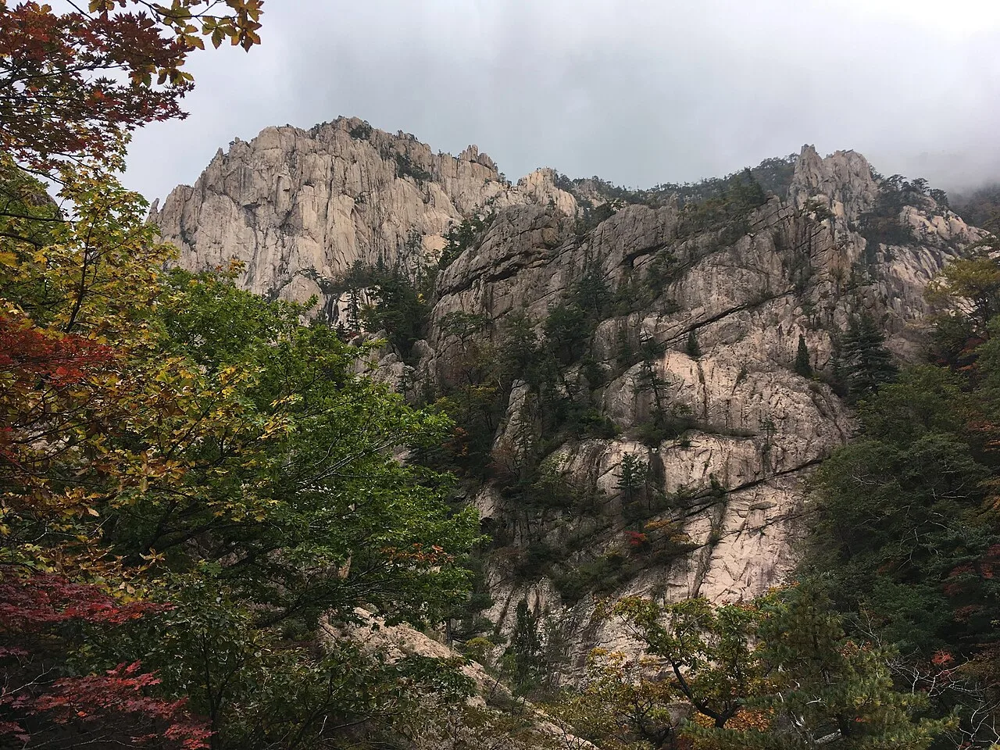
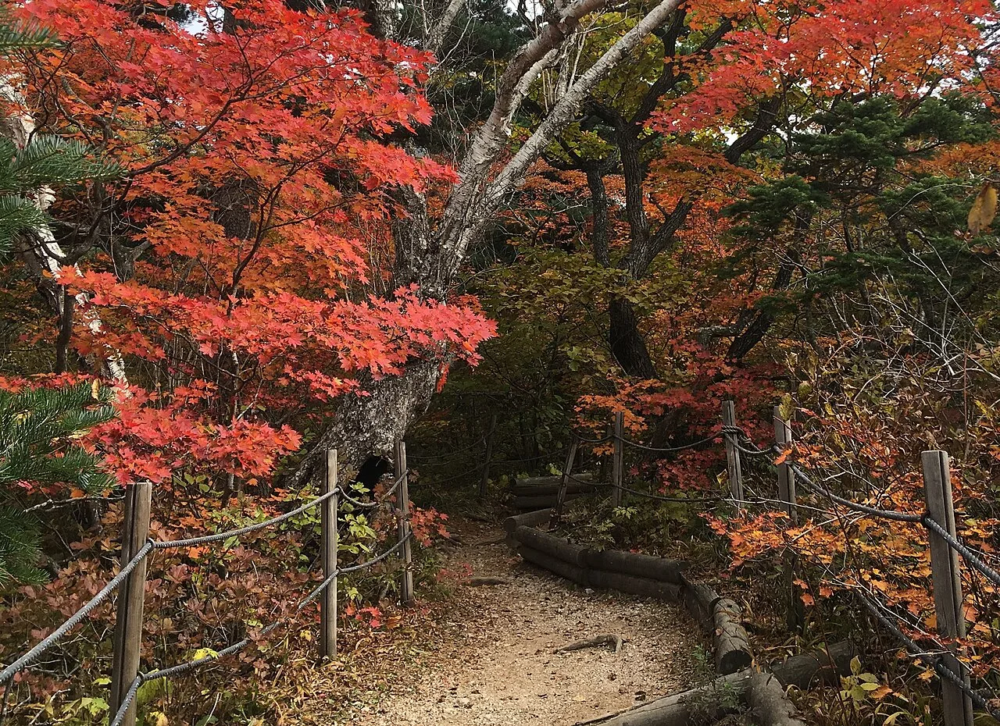

▲ 단풍은 북에서 남으로, 정상에서 기슭으로 내려온다 ⓒ Wikimedia Commons
단풍 여행에서 가장 많이 하는 실수가 있습니다.
명소를 먼저 정하고 날짜를 나중에 맞추는 것입니다.
순서가 반대입니다. 단풍은 움직이는 대상이기 때문입니다.
1. 단풍은 두 방향으로 움직입니다
| 축 | 방향 |
|---|---|
| 위도 | 북동 → 남서 — 강원 산간에서 시작해 남해안으로 |
| 고도 | 정상 → 기슭 — 해발 100m마다 약 이틀 |
📍 고도가 위도보다 중요할 때가 있습니다
단풍은 기온에 반응합니다. 높이 올라갈수록 기온이 낮으므로, 남쪽 높은 산이 북쪽 낮은 곳보다 먼저 물들기도 합니다.
기준이 되는 수치가 있습니다. 해발고도 100m마다 약 이틀씩 시기가 갈립니다. 정상과 기슭의 고도차가 1,000m라면 단순 계산으로 20일, 즉 정상과 기슭의 시차가 2~3주가 되는 셈입니다. 즉 "설악산 단풍 절정"이라는 말 하나로는 부족합니다. 어디까지 올라갈 것인지가 함께 정해져야 합니다.
이 점이 드라이브 여행에서 특히 중요합니다. 차로 갈 수 있는 곳은 대개 기슭이나 중턱입니다. 정상 절정 소식을 듣고 출발하면 차에서 내린 자리는 아직 초록일 수 있습니다.
2. 시기별로 내려오는 순서
| 시기 | 설악산 | 내장산 |
|---|---|---|
| 10월 초 | 정상부 시작 | — |
| 10월 중순 | 중턱까지 내려옴 | 물들기 시작 |
| 10월 하순 | 기슭까지 도달 | 절정으로 진입 |
| 10월 말 ~ 11월 초 | 마무리 | 절정 |
📍 이 표를 확정으로 읽으면 안 됩니다
위 시기는 통상적인 패턴입니다. 그해 여름 기온과 가을 첫 추위에 따라 해마다 달라집니다.
2026년 절정 시기 예보는 9월 이후 기상 정보와 함께 나옵니다. 실제 일정은 출발 1~2주 전에 재확인하는 것이 정확합니다.

▲ 설악산은 10월 초 정상에서 시작해 하순에 기슭까지 내려온다 ⓒ Wikimedia Commons
3. 내장산이 오래 가는 이유
내장산에는 다른 산에 없는 특징이 있습니다.
당단풍, 좁은단풍, 털참단풍 등 단풍나무 11종이 한곳에 모여 있습니다. 종마다 물드는 시기가 조금씩 다릅니다.
📍 절정을 놓쳐도 볼 것이 남습니다
단일 수종으로 이뤄진 곳은 절정 기간이 짧습니다. 며칠 차이로 다 떨어져 있을 수 있습니다.
내장산은 10월 중순부터 11월 초까지 2~3주에 걸쳐 색이 계속 바뀝니다. 날짜를 정확히 맞추기 어려운 사람에게 유리한 선택이라는 뜻입니다.
4. 차로 가는 단풍 — 산이 전부가 아닙니다
단풍 여행이라고 반드시 등산일 필요는 없습니다. 오히려 드라이브에는 가로수길이 더 맞습니다.
| 유형 | 장점 | 단점 |
|---|---|---|
| 국립공원 산지 | 규모와 밀도가 압도적 | 주차 전쟁 · 걸어야 함 |
| 은행나무 가로수길 | 차에서 바로 감상 · 접근 쉬움 | 구간이 짧음 |
| 호수·저수지 둘레길 | 반영이 아름다움 · 한산 | 절정 기간이 짧을 수 있음 |
| 고갯길 | 고도차로 여러 단계를 한 번에 | 굽잇길 운전 부담 |
📍 고갯길이 드라이브에는 가장 좋습니다
고도가 오르내리므로 한 번의 주행에서 여러 단계의 단풍을 볼 수 있습니다. 위쪽은 이미 붉고 아래쪽은 아직 노란 상태를 차 안에서 연속으로 통과하게 됩니다.
다만 굽잇길이 이어져 운전 부담이 큽니다. 동승자가 멀미할 수 있고, 단풍철에는 서행 차량이 줄지어 서기도 합니다.
▲ 은행나무 가로수길은 차에서 바로 감상할 수 있어 드라이브에 잘 맞는다 ⓒ Wikimedia Commons
5. 단풍철 운전에서 진짜 문제
단풍 자체보다 어려운 것이 있습니다.
⚠️ 단풍철 특유의 상황
· 주차장이 오전 중에 마감됩니다 — 유명 국립공원은 특히
· 진입로 편도 1차로 구간에서 한 번 막히면 몇 시간을 잃습니다
· 서행·급정차가 잦습니다 — 풍경을 보려는 차들 때문
· 갓길 주차가 늘어 도로 폭이 좁아집니다
· 산간 도로는 일교차가 커 이른 아침 노면이 젖어 있습니다
📍 시간대를 바꾸는 것이 가장 효과적입니다
같은 장소라도 오전 7시와 오전 10시는 완전히 다릅니다. 주차 가능 여부부터 갈립니다.
또 하나는 요일입니다. 단풍은 2~3주간 이어지므로, 주말 절정을 피해 평일 초입에 가면 밀도는 조금 낮아도 여유롭게 볼 수 있습니다.
6. 일정을 짜는 순서
| 단계 | 내용 |
|---|---|
| 1 | 갈 수 있는 날짜를 먼저 정한다 |
| 2 | 그 날짜에 절정일 지역을 고른다 (북/남, 고/저) |
| 3 | 출발 1~2주 전 예보로 재확인 |
| 4 | 주차 조건을 확인하고 도착 시간을 정한다 |
명소를 먼저 정하면 날짜에 끌려다니게 됩니다. 반대로 하면 선택지가 넓어집니다. 10월 중순에 갈 수 있다면 설악산 중턱이나 내장산 초입이 후보가 되는 식입니다.
주차 조건은 주차가 편한 관광지와 최악인 관광지에서 따로 정리했습니다.

▲ 차로 갈 수 있는 곳은 대개 기슭이나 중턱이다. 정상 절정 소식과 시차가 있다 ⓒ Wikimedia Commons
▲ 동해 무릉계곡. 같은 강원도라도 해안과 계곡은 색이 도는 속도가 다르다 ⓒ 한국관광공사 (공공누리 제1유형)
7. 정리
단풍은 북동에서 남서로, 정상에서 기슭으로 내려옵니다. 고도 기준으로는 100m마다 약 이틀씩 늦어집니다. 설악산은 10월 초 정상 → 중순 중턱 → 하순 기슭, 내장산은 10월 중순 시작 → 10월 말~11월 초 절정이 통상 패턴입니다.
그래서 같은 산 안에서도 정상과 기슭의 시차가 2~3주에 이릅니다. 차로 닿는 곳은 대개 기슭이나 중턱이므로, 정상 절정 소식만 보고 출발하면 어긋납니다.
드라이브에는 은행나무 가로수길과 고갯길이 잘 맞습니다. 특히 고갯길은 고도차 덕분에 여러 단계의 단풍을 한 번에 통과합니다. 다만 2026년 절정 예보는 9월 이후에 나오므로, 출발 1~2주 전 재확인이 필요합니다.